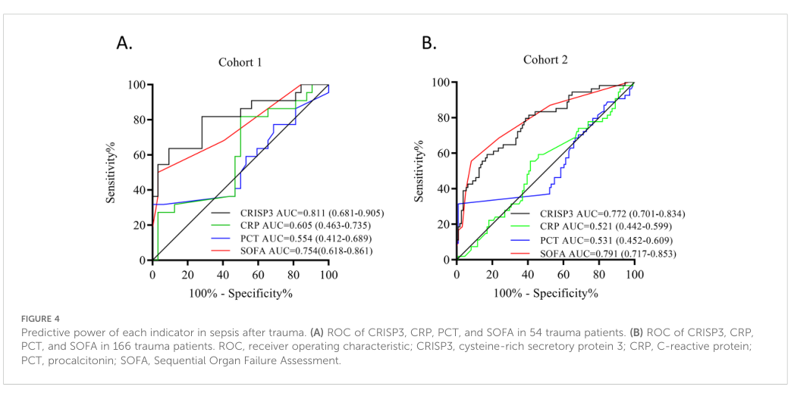

CRISP3 encodes a cysteine-rich secretory protein that is primarily localized to specific and tertiary granules in neutrophils and eosinophils. It is secreted into extracellular fluids including plasma, saliva, seminal plasma, and exocrine secretions, with particularly strong expression in the cauda epididymis and ampulla/vas deferens of the male reproductive tract. CRISP3 plays a role in innate immune response and is also expressed in reproductive tissues. As a member of the CAP/CRISP superfamily, the protein functions as a ligand-binding/interaction protein (rather than as a catalytic enzyme), with an N-terminal CAP domain and a C-terminal cysteine-rich (CRISP) domain implicated in ion channel regulation. Documented binding partners include beta-microseminoprotein (MSMB/PSP94) in seminal plasma, alpha-1-B-glycoprotein (A1BG) at nanomolar affinity, and the plasma membrane Ca2+ exporter PMCA4b (ATP2B4) via the CAP domain.
| GO Term | Evidence | Action | Reason |
|---|---|---|---|
|
GO:0005615
extracellular space
|
IBA
GO_REF:0000033 |
ACCEPT |
Summary: IBA annotation for extracellular space is strongly supported by multiple experimental studies showing CRISP3 in plasma, saliva, seminal plasma, sweat, and as a secreted protein from neutrophil granules.
Reason: Multiple experimental studies confirm CRISP3 is secreted into extracellular fluids. PMID:12009203 detected CRISP3 in human plasma (6.3 μg/ml), saliva (21.8 μg/ml), seminal plasma (11.2 μg/ml), and sweat (0.15 μg/ml). PMID:8601434 characterized it as a secretory protein. PMID:12223513 demonstrated it is released from neutrophil granules. The IBA annotation at the extracellular space level is appropriate and specific.
Supporting Evidence:
PMID:12009203
We further demonstrate the presence of CRISP-3 protein in human plasma (6.3 microg/ml), saliva (21.8 microg/ml), seminal plasma (11.2 microg/ml), and sweat (0.15 microg/ml)
PMID:12223513
CRISP-3 was found to be a matrix protein, which is stored in granules as glycosylated and as unglycosylated protein
file:human/CRISP3/CRISP3-deep-research-perplexity-lite.md
provider: perplexity
file:human/CRISP3/CRISP3-deep-research-falcon.md
CRISP3/SGP28 is localized to **neutrophil granules** (including specific and gelatinase granules) and is measurable in circulation and secretions, supporting a role in extracellular or luminal environments after degranulation/secretion.
|
|
GO:0005576
extracellular region
|
IEA
GO_REF:0000120 |
ACCEPT |
Summary: IEA annotation for extracellular region is correct but less specific than the more precise GO:0005615 (extracellular space) annotation. This broader term is acceptable as an IEA annotation.
Reason: The protein is indeed located in the extracellular region. However, this term is less specific than GO:0005615 (extracellular space), which is supported by IBA and experimental evidence. Since this is an automated IEA annotation and the more specific term is already present, this broader annotation is acceptable but redundant with better annotations.
|
|
GO:0005576
extracellular region
|
TAS
Reactome:R-HSA-6798745 |
ACCEPT |
Summary: TAS annotation from Reactome pathway R-HSA-6798745 (Exocytosis of tertiary granule lumen proteins) is correct, representing the destination of CRISP3 after exocytosis from tertiary granules.
Reason: CRISP3 is released into the extracellular region upon exocytosis of tertiary granules. The Reactome pathway R-HSA-6798745 documents exocytosis of tertiary granule lumen proteins. PMID:12223513 demonstrates CRISP3 is found in tertiary (gelatinase) granules and is released upon neutrophil activation.
Supporting Evidence:
Reactome:R-HSA-6798745
Tertiary (gelatinase) granules are part of a continuum of peroxidase-negative granules formed in myelocytes, metamyelocytes, band cells and segmented neutrophils
|
|
GO:0005576
extracellular region
|
TAS
Reactome:R-HSA-6798749 |
ACCEPT |
Summary: TAS annotation from Reactome pathway R-HSA-6798749 (Exocytosis of specific granule lumen proteins) is correct, representing the destination of CRISP3 after exocytosis from specific granules.
Reason: CRISP3 is released into the extracellular region upon exocytosis of specific granules. The Reactome pathway R-HSA-6798749 documents exocytosis of specific granule lumen proteins. PMID:8601434 and PMID:12223513 clearly demonstrate CRISP3 localization in specific granules of neutrophils.
Supporting Evidence:
PMID:8601434
Subcellular fractionation of human neutrophils indicated that the protein is localized in specific granules
Reactome:R-HSA-6798749
Secondary (specific) granules are peroxidase-negative and rich in antimicrobial substances
|
|
GO:0035580
specific granule lumen
|
TAS
Reactome:R-HSA-6798749 |
ACCEPT |
Summary: TAS annotation for specific granule lumen is strongly supported by direct experimental evidence showing CRISP3 as a matrix protein within specific granules of neutrophils.
Reason: CRISP3 is definitively localized to the lumen of specific granules in neutrophils. PMID:8601434 identified it as a specific granule protein (SGP28). PMID:12223513 characterized it as a matrix protein localized in specific granules using subcellular fractionation and immunogold electron microscopy. This is a core localization for CRISP3.
Supporting Evidence:
PMID:8601434
Subcellular fractionation of human neutrophils indicated that the protein is localized in specific granules. The protein was named SGP28 (specific granule protein of 28 kDa)
PMID:12223513
CRISP-3 was found to be localized in a subset of granules with overlapping characteristics of specific and gelatinase granules and mobilized accordingly
|
|
GO:1904724
tertiary granule lumen
|
TAS
Reactome:R-HSA-6798745 |
ACCEPT |
Summary: TAS annotation for tertiary granule lumen is supported by evidence showing CRISP3 in a continuum of peroxidase-negative granules including tertiary (gelatinase) granules.
Reason: PMID:12223513 demonstrates that CRISP3 is localized in a subset of granules with overlapping characteristics of specific and gelatinase (tertiary) granules, confirming it exists as part of a continuum of peroxidase-negative granules. The Reactome pathway R-HSA-6798745 accurately represents this aspect of CRISP3 localization.
Supporting Evidence:
PMID:12223513
CRISP-3 was found to be localized in a subset of granules with overlapping characteristics of specific and gelatinase granules and mobilized accordingly, thus confirming the hypothesis that peroxidase-negative granules exist as a continuum from specific to gelatinase granules
|
|
GO:0005615
extracellular space
|
HDA
PMID:16502470 Human colostrum: identification of minor proteins in the aqu... |
ACCEPT |
Summary: HDA annotation based on proteomics identification of CRISP3 in human colostrum, a secreted extracellular fluid. This supports the extracellular space localization.
Reason: PMID:16502470 is a proteomics study that identified CRISP3 as one of 151 proteins in the aqueous phase of human colostrum. Colostrum is an extracellular secretion, confirming CRISP3 presence in extracellular space. This complements other evidence for secretion into various extracellular fluids.
Supporting Evidence:
PMID:16502470
We have investigated the low abundance proteins in the aqueous phase of human colostrum, after depletion of the major proteins secretory IgA, lactoferrin, alpha-lactalbumin and HSA by immunoabsorption, using 2-D LC and gel-based proteomic methods. One hundred and fifty-one proteins were identified
|
|
GO:0005576
extracellular region
|
IDA
PMID:12009203 An ELISA for SGP28/CRISP-3, a cysteine-rich secretory protei... |
ACCEPT |
Summary: IDA annotation based on ELISA detection of CRISP3 in plasma, saliva, seminal plasma, and sweat. While correct, the more specific term GO:0005615 (extracellular space) would be more appropriate.
Reason: PMID:12009203 used ELISA to directly detect CRISP3 protein in various extracellular secretions (plasma, saliva, seminal plasma, sweat), providing direct experimental evidence for extracellular region localization. Although GO:0005615 (extracellular space) is more specific and also supported by this study, the broader extracellular region term is technically correct.
Supporting Evidence:
PMID:12009203
We further demonstrate the presence of CRISP-3 protein in human plasma (6.3 microg/ml), saliva (21.8 microg/ml), seminal plasma (11.2 microg/ml), and sweat (0.15 microg/ml)
|
|
GO:0005576
extracellular region
|
IDA
PMID:12223513 Identification of human cysteine-rich secretory protein 3 (C... |
ACCEPT |
Summary: IDA annotation based on immunogold electron microscopy and subcellular fractionation showing CRISP3 in neutrophil granules that are released extracellularly.
Reason: PMID:12223513 used subcellular fractionation and double-labeling immunogold electron microscopy to directly demonstrate CRISP3 localization in granules and its release upon neutrophil activation. The study explicitly states CRISP3 is found in exocrine secretions, indicating extracellular region localization. This is experimentally sound IDA evidence.
Supporting Evidence:
PMID:12223513
The presence of CRISP-3 in peroxidase-negative granules of neutrophils, in granules of eosinophils, and in exocrine secretions indicates a role in the innate host defense
|
|
GO:0005576
extracellular region
|
IDA
PMID:12433721 Cysteine-rich secretory protein-3: a potential biomarker for... |
ACCEPT |
Summary: IDA annotation based on transfection studies demonstrating CRISP3 is a secretory protein, confirming extracellular region localization.
Reason: PMID:12433721 performed transient transfection studies and demonstrated that CRISP3 is a secretory protein, providing direct experimental evidence for extracellular localization. The study focused on CRISP3 as a prostate cancer biomarker and confirmed its secreted nature, which is consistent with its presence in extracellular fluids.
Supporting Evidence:
PMID:12433721
In transient transfection studies, CRISP-3 was found to be a secretory protein
|
|
GO:0005576
extracellular region
|
IDA
PMID:8601434 SGP28, a novel matrix glycoprotein in specific granules of h... |
ACCEPT |
Summary: IDA annotation based on the original characterization of CRISP3 (SGP28) showing it is released from neutrophil specific granules into the extracellular space.
Reason: PMID:8601434 is the original study that identified and characterized CRISP3 (then named SGP28). The study purified the protein from exocytosed material from human neutrophils, providing direct experimental evidence that the protein is secreted into the extracellular region. This is foundational IDA evidence for extracellular localization.
Supporting Evidence:
PMID:8601434
A novel 28 kDa glycoprotein was purified from exocytosed material from human neutrophils and its primary structure partially determined
|
|
GO:0006952
defense response
|
NAS
PMID:12647793 Preferential expression of cystein-rich secretory protein-3 ... |
MODIFY |
Summary: NAS annotation for defense response is based on CRISP3 expression pattern in chronic pancreatitis and its classification as a defense-associated molecule. However, this is too broad - the more specific GO:0045087 (innate immune response) is better supported.
Reason: PMID:12647793 identifies CRISP3 as a "defense-associated molecule" and shows upregulation in chronic pancreatitis, suggesting a defensive role. However, this is a very broad term. The evidence from neutrophil and eosinophil granule localization, presence in exocrine secretions, and similarity to pathogenesis-related proteins more specifically supports GO:0045087 (innate immune response), which is already annotated. The defense response annotation is not wrong but is overly general.
Proposed replacements:
innate immune response
Supporting Evidence:
PMID:12647793
Cysteine-rich secretory protein (CRISP-3) has been identified as a defense-associated molecule with predominant expression in the salivary gland, pancreas and prostate
|
|
GO:0031012
extracellular matrix
|
NAS
PMID:12223513 Identification of human cysteine-rich secretory protein 3 (C... |
REMOVE |
Summary: NAS annotation for extracellular matrix is based on CRISP3 being called a "matrix protein" in granules, but this terminology refers to the granule matrix, not the extracellular matrix. This is a misinterpretation.
Reason: PMID:12223513 describes CRISP3 as a "matrix protein" but this refers to the protein matrix within the granule lumen, not the extracellular matrix. The paper states "CRISP-3 was found to be a matrix protein, which is stored in granules" - this is about intragranular localization. There is no evidence that CRISP3 is a structural component of the extracellular matrix like collagens, laminins, or fibronectins. The protein is found in extracellular space/fluids, but not in the ECM proper.
Supporting Evidence:
PMID:12223513
CRISP-3 was found to be a matrix protein, which is stored in granules as glycosylated and as unglycosylated protein
|
|
GO:0042581
specific granule
|
IDA
PMID:12223513 Identification of human cysteine-rich secretory protein 3 (C... |
ACCEPT |
Summary: IDA annotation for specific granule is strongly supported by subcellular fractionation and immunogold electron microscopy showing CRISP3 localization in specific granules of neutrophils.
Reason: PMID:12223513 used multiple experimental approaches including subcellular fractionation on Percoll density gradients, release studies with secretagogues, and double-labeling immunogold electron microscopy to directly demonstrate CRISP3 localization in specific granules. This is high-quality IDA evidence. The specific granule localization is a core feature of CRISP3 biology.
Supporting Evidence:
PMID:12223513
To investigate the subcellular localization and mobilization of CRISP-3 in human neutrophils, we performed subcellular fractionation of resting and activated neutrophils on three-layer Percoll density gradients, release-studies of granule proteins in response to different secretagogues, and double-labeling immunogold electron microscopy
|
|
GO:0042581
specific granule
|
IDA
PMID:8601434 SGP28, a novel matrix glycoprotein in specific granules of h... |
ACCEPT |
Summary: IDA annotation for specific granule based on the original characterization study that named the protein SGP28 (specific granule protein of 28 kDa) using subcellular fractionation.
Reason: PMID:8601434 is the foundational study that originally characterized CRISP3 as SGP28 (specific granule protein of 28 kDa). The study used subcellular fractionation to demonstrate localization in specific granules of neutrophils. This is the original direct experimental evidence that established CRISP3 as a specific granule protein.
Supporting Evidence:
PMID:8601434
Subcellular fractionation of human neutrophils indicated that the protein is localized in specific granules. The protein was named SGP28 (specific granule protein of 28 kDa)
|
|
GO:0045087
innate immune response
|
NAS
PMID:12223513 Identification of human cysteine-rich secretory protein 3 (C... |
ACCEPT |
Summary: NAS annotation for innate immune response is well-supported by CRISP3 localization in neutrophil and eosinophil granules, presence in exocrine secretions, and similarity to pathogenesis-related proteins.
Reason: PMID:12223513 provides strong indirect evidence for CRISP3 involvement in innate immunity. The study demonstrates CRISP3 in peroxidase-negative granules of neutrophils, granules of eosinophils, and exocrine secretions - all components of innate host defense. The authors explicitly state this indicates a role in innate host defense. Additionally, PMID:12009203 notes similarity to pathogenesis-related proteins in plants, further supporting an innate immune function.
Supporting Evidence:
PMID:12223513
The presence of CRISP-3 in peroxidase-negative granules of neutrophils, in granules of eosinophils, and in exocrine secretions indicates a role in the innate host defense
PMID:12009203
Similarities to pathogenesis-related proteins in plants and the expression in neutrophils and exocrine glands suggest that SGP28/CRISP-3 may play a role in innate host defense
file:human/CRISP3/CRISP3-deep-research-falcon.md
CRISP3's dual association with **neutrophil granules** and **male reproductive tract secretions** supports two plausible biology axes: (i) **innate immune degranulation/secreted protein biology**
|
|
GO:0032934
sterol binding
|
NAS | NEW |
Summary: Added based on the CAP/CRISP family sterol-binding/export functional axis demonstrated for CRISP2 in El Atab et al. 2024 (PMID:39433128), where A1BG binds CRISP-family proteins (including CRISP3) at nanomolar affinity and inhibits sterol secretion/export. Direct sterol-binding activity for hCRISP3 has not been demonstrated; this is a family/paralog-level inference.
Reason: The falcon deep research surfaces a CAP-family sterol-binding/export function that is plausible for CRISP3 by sequence/structure homology to CRISP2 and via the demonstrated nanomolar CRISP3-A1BG interaction. Annotated as NEW with NAS evidence rather than asserted as accepted, pending direct biochemistry on hCRISP3.
Supporting Evidence:
PMID:39433128
We demonstrate that coexpression of A1BG with CRISP2 or CRISP3 impedes the sterol export function of CRISP proteins in vivo without affecting their secretion.
PMID:39433128
Coexpression of A1BG with CAP proteins abolished their sterol export function in yeast and their interaction inhibits sterol-binding in vitro.
file:human/CRISP3/CRISP3-deep-research-falcon.md
CRISP3 is an abundant seminal plasma protein that can bind **alpha-1-B glycoprotein (A1BG)** with **nanomolar affinity**, and showed that coexpression of A1BG with **CRISP3** (and other CAP/CRISP proteins) can reduce sterol secretion/export by **>50%** in cellular systems; this work situates CRISP proteins within a conserved sterol-binding/export functional axis across CAP-family proteins.
|
|
GO:0099106
ion channel regulator activity
|
NAS | NEW |
Summary: Term included based on the ShKT/CRISP cysteine-rich C-terminal domain and family-level annotations. Recent direct biochemical work (Miya 2024) shows that human CRISP3 binds the plasma membrane Ca2+ exporter PMCA4b via its N-terminal CAP domain but, in contrast to hCRISP1 and rat CRISP4, did NOT inhibit PMCA4b-mediated Ca2+ extrusion in their assay. This term should therefore be interpreted with caution for CRISP3 specifically; the activity may be paralog-specific.
Reason: Core function term not present in existing_annotations. Retained based on the conserved ShKT domain and family activity, but flagged because direct activity on PMCA4b was not observed for hCRISP3 in the only published assay.
Supporting Evidence:
PMID:37882330
Human CRISP1 (hCRISP1) and hCRISP3 also interacted with PMCA4b via the N-terminal domain. Interestingly, hCRISP1 and rCRISP4 delayed PMCA4b-mediated calcium extrusion but hCRISP3 did not.
file:human/CRISP3/CRISP3-deep-research-perplexity-lite.md
Ion Channel Regulation: The C-terminal domain is implicated in ion channel regulation, suggesting a role in modulating cellular signaling, especially in reproductive tissues.
file:human/CRISP3/CRISP3-uniprot.txt
FT DOMAIN 207..240 ShKT (ion channel regulator domain)
file:human/CRISP3/CRISP3-deep-research-falcon.md
Unlike hCRISP1 and rat CRISP4, **hCRISP3 did not inhibit PMCA4b-mediated Ca2+ extrusion** in their assay system, implying functional divergence among paralogs.
|
The research report should be a detailed narrative explaining the function, biological processes, and localization of the gene product. Citations should be given for all claims.
You should prioritize authoritative reviews and primary scientific literature when conducting research. You can supplement
this with annotations you find in gene/protein databases, but these can be outdated or inaccurate.
We are specifically interested in the primary function of the gene - for enzymes, what reaction is catalyzed, and what is the substrate specificity? For transporters, what is the substrate? For structural proteins or adapters, what is the broader structural role? For signaling molecules, what is the role in the pathway.
We are interested in where in or outside the cell the gene product carries out its function.
We are also interested in the signaling or biochemical pathways in which the gene functions. We are less interested in broad pleiotropic effects, except where these elucidate the precise role.
Include evidence where possible. We are interested in both experimental evidence as well as inference from structure, evolution, or bioinformatic analysis. Precise studies should be prioritized over high-throughput, where available.
The gene symbol CRISP3 in this report refers specifically to human cysteine-rich secretory protein 3 (CRISP-3), also known as specific granule protein of 28 kDa (SGP28), a secreted glycoprotein detected in multiple body fluids and in neutrophil granules. A primary human seminal-plasma study explicitly identifies CRISP-3 (cysteine-rich secretory protein 3) as UniProt accession P54108, matching the user-provided UniProt record. (belardin2019cysteine‐richsecretoryprotein pages 1-2)
CRISP3 belongs to the vertebrate CRISP (cysteine-rich secretory protein) family within the CAP superfamily. Contemporary mechanistic work frames CRISP proteins as ligand-binding/interaction proteins with an N-terminal CAP domain and a C-terminal cysteine-rich (CRISP) domain, rather than catalytic enzymes with a defined substrate/reaction. (miya2024mammaliancysteine‐richsecretory pages 11-12, atab2024alpha1bglycoprotein(a1bg) pages 1-2)
Human seminal plasma CRISP3 is commonly detected as two bands corresponding to ~29 kDa (unglycosylated) and ~31 kDa (glycosylated) forms, consistent with secreted glycoprotein biology and post-translational modification. (belardin2019cysteine‐richsecretoryprotein pages 1-2, udby2005characterizationandlocalization pages 3-5)
CRISP3/SGP28 is localized to neutrophil granules (including specific and gelatinase granules) and is measurable in circulation and secretions, supporting a role in extracellular or luminal environments after degranulation/secretion. (bjartell2007associationofcysteinerich pages 1-2, udby2005characterizationandlocalization pages 1-2)
A dedicated localization study in humans showed that CRISP3 localizes to secretory epithelium throughout the male genital tract, with particularly strong staining in the cauda epididymis and ampulla/vas deferens, and that seminal plasma CRISP3 is free in solution (not prostasome-associated). (udby2005characterizationandlocalization pages 5-8, udby2005characterizationandlocalization pages 1-2)
Reported concentrations (compiled from an authoritative dissertation-style synthesis of the field) include CRISP3 levels in multiple fluids: saliva ~22 µg/mL, plasma ~6 µg/mL, sweat ~0.15 µg/mL, and seminal plasma ~11 µg/mL; neutrophils were reported at ~0.18 µg per 10^6 neutrophils. (edstrom2010antimicrobialactivityof pages 28-31)
A 2024 mechanistic study identified the plasma-membrane Ca2+ exporter PMCA4b as a binding partner for CRISP-family proteins and demonstrated that human CRISP3 interacts with PMCA4b via the N-terminal CAP domain. Unlike hCRISP1 and rat CRISP4, hCRISP3 did not inhibit PMCA4b-mediated Ca2+ extrusion in their assay system, implying functional divergence among paralogs. (miya2024mammaliancysteine‐richsecretory pages 11-12, miya2024mammaliancysteine‐richsecretory pages 1-2, miya2024mammaliancysteine‐richsecretory pages 13-13)
Interpretation: This supports a model in which CRISP3 can physically associate with membrane Ca2+ handling machinery, potentially influencing sperm and/or immune-cell physiology through protein–protein interaction rather than enzymatic catalysis. (miya2024mammaliancysteine‐richsecretory pages 11-12, miya2024mammaliancysteine‐richsecretory pages 1-2)
CRISP3 binds beta-microseminoprotein (MSMB; also called PSP94) in human seminal plasma, a reproducible interaction that suggests CRISP3 participates in seminal plasma protein complexes. (edstrom2010antimicrobialactivityof pages 28-31)
A 2024 Journal of Biological Chemistry study reported that CRISP3 is an abundant seminal plasma protein that can bind alpha-1-B glycoprotein (A1BG) with nanomolar affinity, and showed that coexpression of A1BG with CRISP3 (and other CAP/CRISP proteins) can reduce sterol secretion/export by >50% in cellular systems; this work situates CRISP proteins within a conserved sterol-binding/export functional axis across CAP-family proteins. (atab2024alpha1bglycoprotein(a1bg) pages 1-2)
Interpretation: This provides a plausible biochemical function for CRISP3’s CAP domain as a ligand-binding module whose activity can be regulated by specific plasma partners (A1BG). (atab2024alpha1bglycoprotein(a1bg) pages 1-2)
A 2024 study integrated public transcriptomic datasets and two retrospective trauma cohorts to evaluate CRISP3 in sepsis.
The ROC curves with AUCs are shown in the paper’s Figure 4. (zhang2024upregulationofcrisp3 media cc8c57b2)
The 2024 PMCA4b-interaction study provides a concrete CRISP3 binding partner and domain mapping (CAP domain-mediated interaction), moving CRISP3 biology beyond purely correlative expression studies and toward mechanistic hypotheses related to Ca2+ handling. (miya2024mammaliancysteine‐richsecretory pages 11-12, miya2024mammaliancysteine‐richsecretory pages 1-2)
CRISP3 is strongly linked to prostate cancer molecular subtypes:
Earlier large-cohort outcome work after radical prostatectomy (Clinical Cancer Research, 2007-07) reported that CRISP3 positivity associated with worse recurrence-free probability (univariate HR 1.53, P=0.010; remained significant on multivariable analysis P=0.007), though it did not materially improve prediction beyond PSA/stage/grade in their model. (bjartell2007associationofcysteinerich pages 1-2)
Real-world implementation context: These data support CRISP3 as a tissue (IHC) and transcript marker associated with specific prostate cancer biology (ERG-driven). However, the evidence in this context does not establish CRISP3 as a stand-alone clinically adopted test; rather, it is best viewed as an investigational or adjunct biomarker within molecular stratification frameworks. (bjartell2007associationofcysteinerich pages 1-2, ribeiro2011cysteinerichsecretoryprotein3 pages 1-2)
In varicocele, seminal plasma CRISP3 levels were markedly elevated and decreased after surgery:
The 2024 sepsis study suggests CRISP3 could be used as a risk-prediction biomarker at admission in trauma patients, with ROC/AUC performance competitive with or better than some conventional laboratory markers in that dataset. (zhang2024upregulationofcrisp3 pages 1-2, zhang2024upregulationofcrisp3 media cc8c57b2)
Primary molecular role: The strongest mechanistic evidence positions CRISP3 as a secreted, interaction-driven CAP/CRISP protein participating in extracellular complexes (e.g., with MSMB/PSP94, A1BG) and binding to a membrane Ca2+ exporter (PMCA4b), consistent with a functional repertoire in ligand binding, complex formation, and modulation of membrane/extracellular physiology rather than enzymatic catalysis. (miya2024mammaliancysteine‐richsecretory pages 11-12, atab2024alpha1bglycoprotein(a1bg) pages 1-2, edstrom2010antimicrobialactivityof pages 28-31)
Physiologic contexts: CRISP3’s dual association with neutrophil granules and male reproductive tract secretions supports two plausible biology axes: (i) innate immune degranulation/secreted protein biology, and (ii) reproductive tract secretory milieu and sperm environment. (udby2005characterizationandlocalization pages 1-2, udby2005characterizationandlocalization pages 5-8)
Disease translation: The most mature 2024 translation is as a sepsis-associated biomarker with quantified ORs and AUCs in two cohorts; in oncology, the most mechanistically grounded link is ERG-driven CRISP3 overexpression in TMPRSS2–ERG prostate cancer, suggesting utility as a marker of that transcriptional program and potentially of tumor microenvironment interactions. (zhang2024upregulationofcrisp3 pages 1-2, ribeiro2011cysteinerichsecretoryprotein3 pages 8-9, ribeiro2011cysteinerichsecretoryprotein3 pages 1-2)
| Category | Key findings | Quantitative/statistical data | Key sources (author year, journal) | URL |
|---|---|---|---|---|
| Identity/features | Human CRISP3 is verified as cysteine-rich secretory protein 3, also called SGP28, matching UniProt P54108; it is a secreted CRISP/CAP-family glycoprotein detected as ~29 kDa unglycosylated and ~31 kDa glycosylated forms in seminal plasma (belardin2019cysteine‐richsecretoryprotein pages 1-2, udby2005characterizationandlocalization pages 1-2) | Two seminal-plasma isoforms: 29 kDa and 31 kDa; human CRISP3 is described as a 245-aa extracellular/secreted protein in prostate-cancer literature (belardin2019cysteine‐richsecretoryprotein pages 1-2, ribeiro2011cysteinerichsecretoryprotein3 pages 8-9) | Belardin 2019, Andrology; Udby 2005, Journal of Andrology; Ribeiro 2011, PLoS ONE | https://doi.org/10.1111/andr.12555; https://doi.org/10.2164/jandrol.04132; https://doi.org/10.1371/journal.pone.0022317 |
| Localization & expression | CRISP3 is present in neutrophil specific/gelatinase granules, plasma, saliva, sweat, and seminal plasma; in the male tract it localizes to secretory epithelium throughout, with strongest expression in cauda epididymis and ampulla/vas deferens, and seminal-plasma CRISP3 is free in solution rather than prostasome-associated (bjartell2007associationofcysteinerich pages 1-2, udby2005characterizationandlocalization pages 1-2, edstrom2010antimicrobialactivityof pages 28-31, udby2005characterizationandlocalization pages 5-8) | Reported concentrations: saliva ~22 µg/mL, plasma ~6 µg/mL, sweat ~0.15 µg/mL, seminal plasma ~11 µg/mL; tissue levels low in testis/caput-corpus epididymis (~0.025 mg CRISP3 per mg protein) and high in cauda epididymis/vas deferens (~4.5 mg/mg protein) (edstrom2010antimicrobialactivityof pages 28-31, udby2005characterizationandlocalization pages 5-8) | Udby 2005, Journal of Andrology; Bjartell 2007, Clinical Cancer Research; Edström 2010 (thesis/monograph context) | https://doi.org/10.2164/jandrol.04132; https://doi.org/10.1158/1078-0432.ccr-06-3031 |
| Binding partners/mechanisms | Recent mechanistic work shows human CRISP3 binds PMCA4b via its N-terminal CAP domain; unlike hCRISP1/rCRISP4 it did not inhibit PMCA4b-mediated Ca2+ extrusion. CRISP3 also interacts with PSP94/MSMB in seminal plasma, and A1BG binds CRISP-family proteins with nanomolar affinity and inhibits sterol binding/export, supporting roles in extracellular ligand binding rather than a defined enzymatic reaction (miya2024mammaliancysteine‐richsecretory pages 11-12, miya2024mammaliancysteine‐richsecretory pages 1-2, atab2024alpha1bglycoprotein(a1bg) pages 1-2, edstrom2010antimicrobialactivityof pages 28-31) | A1BG coexpression blocked sterol secretion by >50%; CRISP3-A1BG interaction described as nanomolar affinity; PMCA4b interaction mapped to the CAP domain, while hCRISP3 did not reduce PMCA4b Ca2+ clearance in the 2024 assay system (miya2024mammaliancysteine‐richsecretory pages 11-12, miya2024mammaliancysteine‐richsecretory pages 1-2, atab2024alpha1bglycoprotein(a1bg) pages 1-2) | Miya 2024, Andrology; Atab 2024, Journal of Biological Chemistry | https://doi.org/10.1111/andr.13549; https://doi.org/10.1016/j.jbc.2024.107910 |
| Disease/biomarker applications | In sepsis, plasma CRISP3 is elevated and shows biomarker potential in trauma cohorts. In prostate cancer, CRISP3 is a direct ERG target and is strongly overexpressed in TMPRSS2-ERG fusion-positive tumors. In varicocele-associated infertility, seminal CRISP3 rises markedly and falls after surgery, supporting use as an inflammation-linked seminal biomarker (zhang2024upregulationofcrisp3 pages 1-2, zhang2024upregulationofcrisp3 media cc8c57b2, ribeiro2011cysteinerichsecretoryprotein3 pages 8-9, ribeiro2011cysteinerichsecretoryprotein3 pages 5-6, ribeiro2011cysteinerichsecretoryprotein3 pages 1-2, belardin2019cysteine‐richsecretoryprotein pages 1-2) | Sepsis: meta-analysis of 23 datasets SMD 0.90 (95% CI 0.50-1.30), p<0.001; cohort 1 OR 1.004 (1.002-1.006), AUC 0.811 (0.681-0.905); cohort 2 OR 1.002 (1.001-1.003), AUC 0.772 (0.701-0.834). Prostate cancer: >50-fold upregulation in fusion-positive tumors, ~53-fold vs TMPRSS2-ERG-negative, 63% IHC overexpression, ERG-CRISP3 correlation rs=0.65, p<0.001. Varicocele: seminal CRISP3 increased 67.5-fold (29 kDa) and 5.2-fold (31 kDa); after varicocelectomy decreased 5.6-fold and 4.3-fold (zhang2024upregulationofcrisp3 pages 1-2, zhang2024upregulationofcrisp3 media cc8c57b2, ribeiro2011cysteinerichsecretoryprotein3 pages 8-9, ribeiro2011cysteinerichsecretoryprotein3 pages 5-6, ribeiro2011cysteinerichsecretoryprotein3 pages 1-2, belardin2019cysteine‐richsecretoryprotein pages 1-2) | Zhang 2024, Frontiers in Immunology; Ribeiro 2011, PLoS ONE; Bjartell 2007, Clinical Cancer Research; Belardin 2019, Andrology | https://doi.org/10.3389/fimmu.2024.1492538; https://doi.org/10.1371/journal.pone.0022317; https://doi.org/10.1158/1078-0432.ccr-06-3031; https://doi.org/10.1111/andr.12555 |
Table: This table compiles core evidence for human CRISP3 (UniProt P54108), spanning identity, localization, binding partners, and disease/biomarker relevance. It emphasizes recent 2024 studies while anchoring them to foundational localization and prostate-cancer literature.
Zhang et al. (2024) Figure 4 provides ROC curves and AUCs for admission plasma CRISP3 predicting sepsis in two trauma cohorts. (zhang2024upregulationofcrisp3 media cc8c57b2)
Although CRISP3 is well supported as a secreted CAP/CRISP protein with specific binding partners and strong disease associations, the evidence assembled here does not yet establish a single, universally accepted “primary physiologic function” analogous to a catalytic enzyme reaction; rather, current best evidence supports context-dependent interaction roles (immune granules, reproductive secretions, cancer microenvironments). (miya2024mammaliancysteine‐richsecretory pages 11-12, atab2024alpha1bglycoprotein(a1bg) pages 1-2, udby2005characterizationandlocalization pages 5-8)
References
(belardin2019cysteine‐richsecretoryprotein pages 1-2): L. B. Belardin, M. Camargo, P. Intasqui, M. P. Antoniassi, R. Fraietta, and R. Bertolla. Cysteine‐rich secretory protein 3: inflammation role in adult varicocoele. Andrology, 7:53-61, Oct 2019. URL: https://doi.org/10.1111/andr.12555, doi:10.1111/andr.12555. This article has 30 citations and is from a peer-reviewed journal.
(miya2024mammaliancysteine‐richsecretory pages 11-12): Vaidehi Miya, Chandan Kumar, Ananya A. Breed, Susan Idicula‐Thomas, and Bhakti R. Pathak. Mammalian cysteine‐rich secretory proteins interact with plasma membrane ca2+ exporter pmca4b. Andrology, 12:1096-1110, Oct 2024. URL: https://doi.org/10.1111/andr.13549, doi:10.1111/andr.13549. This article has 2 citations and is from a peer-reviewed journal.
(atab2024alpha1bglycoprotein(a1bg) pages 1-2): Ola El Atab, Barkha Gupta, Zhu Han, Jiri Stribny, Oluwatoyin A. Asojo, and Roger Schneiter. Alpha-1-b glycoprotein (a1bg) inhibits sterol-binding and export by crisp2. Journal of Biological Chemistry, 300:107910, Dec 2024. URL: https://doi.org/10.1016/j.jbc.2024.107910, doi:10.1016/j.jbc.2024.107910. This article has 4 citations and is from a domain leading peer-reviewed journal.
(udby2005characterizationandlocalization pages 3-5): Lene Udby, Anders Bjartell, Johan Malm, Arne Egesten, Åke Lundwall, Jack B. Cowland, Niels Borregaard, and Lars Kjeldsen. Characterization and localization of cysteine-rich secretory protein 3 (crisp-3) in the human male reproductive tract. Journal of andrology, 26 3:333-42, May 2005. URL: https://doi.org/10.2164/jandrol.04132, doi:10.2164/jandrol.04132. This article has 107 citations.
(bjartell2007associationofcysteinerich pages 1-2): Anders S. Bjartell, Hikmat Al-Ahmadie, Angel M. Serio, James A. Eastham, Scott E. Eggener, Samson W. Fine, Lene Udby, William L. Gerald, Andrew J. Vickers, Hans Lilja, Victor E. Reuter, and Peter T. Scardino. Association of cysteine-rich secretory protein 3 and β-microseminoprotein with outcome after radical prostatectomy. Clinical Cancer Research, 13:4130-4138, Jul 2007. URL: https://doi.org/10.1158/1078-0432.ccr-06-3031, doi:10.1158/1078-0432.ccr-06-3031. This article has 131 citations and is from a highest quality peer-reviewed journal.
(udby2005characterizationandlocalization pages 1-2): Lene Udby, Anders Bjartell, Johan Malm, Arne Egesten, Åke Lundwall, Jack B. Cowland, Niels Borregaard, and Lars Kjeldsen. Characterization and localization of cysteine-rich secretory protein 3 (crisp-3) in the human male reproductive tract. Journal of andrology, 26 3:333-42, May 2005. URL: https://doi.org/10.2164/jandrol.04132, doi:10.2164/jandrol.04132. This article has 107 citations.
(udby2005characterizationandlocalization pages 5-8): Lene Udby, Anders Bjartell, Johan Malm, Arne Egesten, Åke Lundwall, Jack B. Cowland, Niels Borregaard, and Lars Kjeldsen. Characterization and localization of cysteine-rich secretory protein 3 (crisp-3) in the human male reproductive tract. Journal of andrology, 26 3:333-42, May 2005. URL: https://doi.org/10.2164/jandrol.04132, doi:10.2164/jandrol.04132. This article has 107 citations.
(edstrom2010antimicrobialactivityof pages 28-31): A Edström. Antimicrobial activity of human seminal plasma and seminal plasma proteins. Unknown journal, 2010.
(miya2024mammaliancysteine‐richsecretory pages 1-2): Vaidehi Miya, Chandan Kumar, Ananya A. Breed, Susan Idicula‐Thomas, and Bhakti R. Pathak. Mammalian cysteine‐rich secretory proteins interact with plasma membrane ca2+ exporter pmca4b. Andrology, 12:1096-1110, Oct 2024. URL: https://doi.org/10.1111/andr.13549, doi:10.1111/andr.13549. This article has 2 citations and is from a peer-reviewed journal.
(miya2024mammaliancysteine‐richsecretory pages 13-13): Vaidehi Miya, Chandan Kumar, Ananya A. Breed, Susan Idicula‐Thomas, and Bhakti R. Pathak. Mammalian cysteine‐rich secretory proteins interact with plasma membrane ca2+ exporter pmca4b. Andrology, 12:1096-1110, Oct 2024. URL: https://doi.org/10.1111/andr.13549, doi:10.1111/andr.13549. This article has 2 citations and is from a peer-reviewed journal.
(zhang2024upregulationofcrisp3 pages 1-2): An-qiang Zhang, Da-lin Wen, Xin-xin Ma, Fei Zhang, Guo-sheng Chen, Kelimu Maimaiti, Gang Xu, Jian-xin Jiang, and Hong-xiang Lu. Upregulation of crisp3 and its clinical values in adult sepsis: a comprehensive analysis based on microarrays and a two-retrospective-cohort study. Frontiers in Immunology, Nov 2024. URL: https://doi.org/10.3389/fimmu.2024.1492538, doi:10.3389/fimmu.2024.1492538. This article has 2 citations and is from a peer-reviewed journal.
(zhang2024upregulationofcrisp3 media cc8c57b2): An-qiang Zhang, Da-lin Wen, Xin-xin Ma, Fei Zhang, Guo-sheng Chen, Kelimu Maimaiti, Gang Xu, Jian-xin Jiang, and Hong-xiang Lu. Upregulation of crisp3 and its clinical values in adult sepsis: a comprehensive analysis based on microarrays and a two-retrospective-cohort study. Frontiers in Immunology, Nov 2024. URL: https://doi.org/10.3389/fimmu.2024.1492538, doi:10.3389/fimmu.2024.1492538. This article has 2 citations and is from a peer-reviewed journal.
(ribeiro2011cysteinerichsecretoryprotein3 pages 1-2): Franclim R. Ribeiro, Paula Paulo, Vera L. Costa, João D. Barros-Silva, João Ramalho-Carvalho, Carmen Jerónimo, Rui Henrique, Guro E. Lind, Rolf I. Skotheim, Ragnhild A. Lothe, and Manuel R. Teixeira. Cysteine-rich secretory protein-3 (crisp3) is strongly up-regulated in prostate carcinomas with the tmprss2-erg fusion gene. PLoS ONE, 6:e22317, Jul 2011. URL: https://doi.org/10.1371/journal.pone.0022317, doi:10.1371/journal.pone.0022317. This article has 61 citations and is from a peer-reviewed journal.
(ribeiro2011cysteinerichsecretoryprotein3 pages 8-9): Franclim R. Ribeiro, Paula Paulo, Vera L. Costa, João D. Barros-Silva, João Ramalho-Carvalho, Carmen Jerónimo, Rui Henrique, Guro E. Lind, Rolf I. Skotheim, Ragnhild A. Lothe, and Manuel R. Teixeira. Cysteine-rich secretory protein-3 (crisp3) is strongly up-regulated in prostate carcinomas with the tmprss2-erg fusion gene. PLoS ONE, 6:e22317, Jul 2011. URL: https://doi.org/10.1371/journal.pone.0022317, doi:10.1371/journal.pone.0022317. This article has 61 citations and is from a peer-reviewed journal.
(ribeiro2011cysteinerichsecretoryprotein3 pages 5-6): Franclim R. Ribeiro, Paula Paulo, Vera L. Costa, João D. Barros-Silva, João Ramalho-Carvalho, Carmen Jerónimo, Rui Henrique, Guro E. Lind, Rolf I. Skotheim, Ragnhild A. Lothe, and Manuel R. Teixeira. Cysteine-rich secretory protein-3 (crisp3) is strongly up-regulated in prostate carcinomas with the tmprss2-erg fusion gene. PLoS ONE, 6:e22317, Jul 2011. URL: https://doi.org/10.1371/journal.pone.0022317, doi:10.1371/journal.pone.0022317. This article has 61 citations and is from a peer-reviewed journal.

The CRISP3 (Cysteine Rich Secretory Protein 3) gene encodes a secreted protein involved in reproductive biology, immune response, and is associated with certain diseases, notably prostate cancer[3][4][6][8].
| Domain | Function/Features |
|---|---|
| CAP domain (N-term) | Structural stability, possible ligand binding |
| Hinge region | Connects domains, may confer flexibility |
| Ion channel regulator (C-term) | Modulates ion channel activity, signaling |
Publication dates and URLs are included above for further reference.
id: P54108
gene_symbol: CRISP3
product_type: PROTEIN
status: COMPLETE
taxon:
id: NCBITaxon:9606
label: Homo sapiens
description: 'CRISP3 encodes a cysteine-rich secretory protein that is primarily localized
to specific and tertiary granules in neutrophils and eosinophils. It is secreted
into extracellular fluids including plasma, saliva, seminal plasma, and exocrine
secretions, with particularly strong expression in the cauda epididymis and ampulla/vas
deferens of the male reproductive tract. CRISP3 plays a role in innate immune response
and is also expressed in reproductive tissues. As a member of the CAP/CRISP superfamily,
the protein functions as a ligand-binding/interaction protein (rather than as a
catalytic enzyme), with an N-terminal CAP domain and a C-terminal cysteine-rich
(CRISP) domain implicated in ion channel regulation. Documented binding partners
include beta-microseminoprotein (MSMB/PSP94) in seminal plasma, alpha-1-B-glycoprotein
(A1BG) at nanomolar affinity, and the plasma membrane Ca2+ exporter PMCA4b (ATP2B4)
via the CAP domain.'
existing_annotations:
- term:
id: GO:0005615
label: extracellular space
evidence_type: IBA
original_reference_id: GO_REF:0000033
review:
summary: IBA annotation for extracellular space is strongly supported by
multiple experimental studies showing CRISP3 in plasma, saliva, seminal
plasma, sweat, and as a secreted protein from neutrophil granules.
action: ACCEPT
reason: Multiple experimental studies confirm CRISP3 is secreted into
extracellular fluids. PMID:12009203 detected CRISP3 in human plasma (6.3
μg/ml), saliva (21.8 μg/ml), seminal plasma (11.2 μg/ml), and sweat (0.15
μg/ml). PMID:8601434 characterized it as a secretory protein.
PMID:12223513 demonstrated it is released from neutrophil granules. The
IBA annotation at the extracellular space level is appropriate and
specific.
supported_by:
- reference_id: PMID:12009203
supporting_text: "We further demonstrate the presence of CRISP-3 protein in
human plasma (6.3 microg/ml), saliva (21.8 microg/ml), seminal plasma (11.2
microg/ml), and sweat (0.15 microg/ml)"
- reference_id: PMID:12223513
supporting_text: "CRISP-3 was found to be a matrix protein, which is stored
in granules as glycosylated and as unglycosylated protein"
- reference_id: file:human/CRISP3/CRISP3-deep-research-perplexity-lite.md
supporting_text: 'provider: perplexity'
- reference_id: file:human/CRISP3/CRISP3-deep-research-falcon.md
supporting_text: "CRISP3/SGP28 is localized to **neutrophil granules** (including
specific and gelatinase granules) and is measurable in circulation and secretions,
supporting a role in extracellular or luminal environments after degranulation/secretion."
- term:
id: GO:0005576
label: extracellular region
evidence_type: IEA
original_reference_id: GO_REF:0000120
review:
summary: IEA annotation for extracellular region is correct but less
specific than the more precise GO:0005615 (extracellular space)
annotation. This broader term is acceptable as an IEA annotation.
action: ACCEPT
reason: The protein is indeed located in the extracellular region. However,
this term is less specific than GO:0005615 (extracellular space), which is
supported by IBA and experimental evidence. Since this is an automated IEA
annotation and the more specific term is already present, this broader
annotation is acceptable but redundant with better annotations.
- term:
id: GO:0005576
label: extracellular region
evidence_type: TAS
original_reference_id: Reactome:R-HSA-6798745
review:
summary: TAS annotation from Reactome pathway R-HSA-6798745 (Exocytosis of
tertiary granule lumen proteins) is correct, representing the destination
of CRISP3 after exocytosis from tertiary granules.
action: ACCEPT
reason: CRISP3 is released into the extracellular region upon exocytosis of
tertiary granules. The Reactome pathway R-HSA-6798745 documents exocytosis
of tertiary granule lumen proteins. PMID:12223513 demonstrates CRISP3 is
found in tertiary (gelatinase) granules and is released upon neutrophil
activation.
supported_by:
- reference_id: Reactome:R-HSA-6798745
supporting_text: "Tertiary (gelatinase) granules are part of a continuum of
peroxidase-negative granules formed in myelocytes, metamyelocytes, band cells
and segmented neutrophils"
- term:
id: GO:0005576
label: extracellular region
evidence_type: TAS
original_reference_id: Reactome:R-HSA-6798749
review:
summary: TAS annotation from Reactome pathway R-HSA-6798749 (Exocytosis of
specific granule lumen proteins) is correct, representing the destination
of CRISP3 after exocytosis from specific granules.
action: ACCEPT
reason: CRISP3 is released into the extracellular region upon exocytosis of
specific granules. The Reactome pathway R-HSA-6798749 documents exocytosis
of specific granule lumen proteins. PMID:8601434 and PMID:12223513 clearly
demonstrate CRISP3 localization in specific granules of neutrophils.
supported_by:
- reference_id: PMID:8601434
supporting_text: "Subcellular fractionation of human neutrophils indicated that
the protein is localized in specific granules"
- reference_id: Reactome:R-HSA-6798749
supporting_text: "Secondary (specific) granules are peroxidase-negative and
rich in antimicrobial substances"
- term:
id: GO:0035580
label: specific granule lumen
evidence_type: TAS
original_reference_id: Reactome:R-HSA-6798749
review:
summary: TAS annotation for specific granule lumen is strongly supported by
direct experimental evidence showing CRISP3 as a matrix protein within
specific granules of neutrophils.
action: ACCEPT
reason: CRISP3 is definitively localized to the lumen of specific granules
in neutrophils. PMID:8601434 identified it as a specific granule protein
(SGP28). PMID:12223513 characterized it as a matrix protein localized in
specific granules using subcellular fractionation and immunogold electron
microscopy. This is a core localization for CRISP3.
supported_by:
- reference_id: PMID:8601434
supporting_text: "Subcellular fractionation of human neutrophils indicated that
the protein is localized in specific granules. The protein was named SGP28
(specific granule protein of 28 kDa)"
- reference_id: PMID:12223513
supporting_text: "CRISP-3 was found to be localized in a subset of granules
with overlapping characteristics of specific and gelatinase granules and mobilized
accordingly"
- term:
id: GO:1904724
label: tertiary granule lumen
evidence_type: TAS
original_reference_id: Reactome:R-HSA-6798745
review:
summary: TAS annotation for tertiary granule lumen is supported by evidence
showing CRISP3 in a continuum of peroxidase-negative granules including
tertiary (gelatinase) granules.
action: ACCEPT
reason: PMID:12223513 demonstrates that CRISP3 is localized in a subset of
granules with overlapping characteristics of specific and gelatinase
(tertiary) granules, confirming it exists as part of a continuum of
peroxidase-negative granules. The Reactome pathway R-HSA-6798745
accurately represents this aspect of CRISP3 localization.
supported_by:
- reference_id: PMID:12223513
supporting_text: "CRISP-3 was found to be localized in a subset of granules
with overlapping characteristics of specific and gelatinase granules and mobilized
accordingly, thus confirming the hypothesis that peroxidase-negative granules
exist as a continuum from specific to gelatinase granules"
- term:
id: GO:0005615
label: extracellular space
evidence_type: HDA
original_reference_id: PMID:16502470
review:
summary: HDA annotation based on proteomics identification of CRISP3 in
human colostrum, a secreted extracellular fluid. This supports the
extracellular space localization.
action: ACCEPT
reason: PMID:16502470 is a proteomics study that identified CRISP3 as one of
151 proteins in the aqueous phase of human colostrum. Colostrum is an
extracellular secretion, confirming CRISP3 presence in extracellular
space. This complements other evidence for secretion into various
extracellular fluids.
supported_by:
- reference_id: PMID:16502470
supporting_text: "We have investigated the low abundance proteins in the aqueous
phase of human colostrum, after depletion of the major proteins secretory
IgA, lactoferrin, alpha-lactalbumin and HSA by immunoabsorption, using 2-D
LC and gel-based proteomic methods. One hundred and fifty-one proteins were
identified"
- term:
id: GO:0005576
label: extracellular region
evidence_type: IDA
original_reference_id: PMID:12009203
review:
summary: IDA annotation based on ELISA detection of CRISP3 in plasma,
saliva, seminal plasma, and sweat. While correct, the more specific term
GO:0005615 (extracellular space) would be more appropriate.
action: ACCEPT
reason: PMID:12009203 used ELISA to directly detect CRISP3 protein in
various extracellular secretions (plasma, saliva, seminal plasma, sweat),
providing direct experimental evidence for extracellular region
localization. Although GO:0005615 (extracellular space) is more specific
and also supported by this study, the broader extracellular region term is
technically correct.
supported_by:
- reference_id: PMID:12009203
supporting_text: "We further demonstrate the presence of CRISP-3 protein in
human plasma (6.3 microg/ml), saliva (21.8 microg/ml), seminal plasma (11.2
microg/ml), and sweat (0.15 microg/ml)"
- term:
id: GO:0005576
label: extracellular region
evidence_type: IDA
original_reference_id: PMID:12223513
review:
summary: IDA annotation based on immunogold electron microscopy and
subcellular fractionation showing CRISP3 in neutrophil granules that are
released extracellularly.
action: ACCEPT
reason: PMID:12223513 used subcellular fractionation and double-labeling
immunogold electron microscopy to directly demonstrate CRISP3 localization
in granules and its release upon neutrophil activation. The study
explicitly states CRISP3 is found in exocrine secretions, indicating
extracellular region localization. This is experimentally sound IDA
evidence.
supported_by:
- reference_id: PMID:12223513
supporting_text: "The presence of CRISP-3 in peroxidase-negative granules of
neutrophils, in granules of eosinophils, and in exocrine secretions indicates
a role in the innate host defense"
- term:
id: GO:0005576
label: extracellular region
evidence_type: IDA
original_reference_id: PMID:12433721
review:
summary: IDA annotation based on transfection studies demonstrating CRISP3
is a secretory protein, confirming extracellular region localization.
action: ACCEPT
reason: PMID:12433721 performed transient transfection studies and
demonstrated that CRISP3 is a secretory protein, providing direct
experimental evidence for extracellular localization. The study focused on
CRISP3 as a prostate cancer biomarker and confirmed its secreted nature,
which is consistent with its presence in extracellular fluids.
supported_by:
- reference_id: PMID:12433721
supporting_text: "In transient transfection studies, CRISP-3 was found to be
a secretory protein"
- term:
id: GO:0005576
label: extracellular region
evidence_type: IDA
original_reference_id: PMID:8601434
review:
summary: IDA annotation based on the original characterization of CRISP3
(SGP28) showing it is released from neutrophil specific granules into the
extracellular space.
action: ACCEPT
reason: PMID:8601434 is the original study that identified and characterized
CRISP3 (then named SGP28). The study purified the protein from exocytosed
material from human neutrophils, providing direct experimental evidence
that the protein is secreted into the extracellular region. This is
foundational IDA evidence for extracellular localization.
supported_by:
- reference_id: PMID:8601434
supporting_text: "A novel 28 kDa glycoprotein was purified from exocytosed material
from human neutrophils and its primary structure partially determined"
- term:
id: GO:0006952
label: defense response
evidence_type: NAS
original_reference_id: PMID:12647793
review:
summary: NAS annotation for defense response is based on CRISP3 expression
pattern in chronic pancreatitis and its classification as a
defense-associated molecule. However, this is too broad - the more
specific GO:0045087 (innate immune response) is better supported.
action: MODIFY
reason: PMID:12647793 identifies CRISP3 as a "defense-associated molecule"
and shows upregulation in chronic pancreatitis, suggesting a defensive
role. However, this is a very broad term. The evidence from neutrophil and
eosinophil granule localization, presence in exocrine secretions, and
similarity to pathogenesis-related proteins more specifically supports
GO:0045087 (innate immune response), which is already annotated. The
defense response annotation is not wrong but is overly general.
proposed_replacement_terms:
- id: GO:0045087
label: innate immune response
supported_by:
- reference_id: PMID:12647793
supporting_text: "Cysteine-rich secretory protein (CRISP-3) has been identified
as a defense-associated molecule with predominant expression in the salivary
gland, pancreas and prostate"
- term:
id: GO:0031012
label: extracellular matrix
evidence_type: NAS
original_reference_id: PMID:12223513
review:
summary: NAS annotation for extracellular matrix is based on CRISP3 being
called a "matrix protein" in granules, but this terminology refers to the
granule matrix, not the extracellular matrix. This is a misinterpretation.
action: REMOVE
reason: PMID:12223513 describes CRISP3 as a "matrix protein" but this refers
to the protein matrix within the granule lumen, not the extracellular
matrix. The paper states "CRISP-3 was found to be a matrix protein, which
is stored in granules" - this is about intragranular localization. There
is no evidence that CRISP3 is a structural component of the extracellular
matrix like collagens, laminins, or fibronectins. The protein is found in
extracellular space/fluids, but not in the ECM proper.
supported_by:
- reference_id: PMID:12223513
supporting_text: "CRISP-3 was found to be a matrix protein, which is stored
in granules as glycosylated and as unglycosylated protein"
- term:
id: GO:0042581
label: specific granule
evidence_type: IDA
original_reference_id: PMID:12223513
review:
summary: IDA annotation for specific granule is strongly supported by
subcellular fractionation and immunogold electron microscopy showing
CRISP3 localization in specific granules of neutrophils.
action: ACCEPT
reason: PMID:12223513 used multiple experimental approaches including
subcellular fractionation on Percoll density gradients, release studies
with secretagogues, and double-labeling immunogold electron microscopy to
directly demonstrate CRISP3 localization in specific granules. This is
high-quality IDA evidence. The specific granule localization is a core
feature of CRISP3 biology.
supported_by:
- reference_id: PMID:12223513
supporting_text: "To investigate the subcellular localization and mobilization
of CRISP-3 in human neutrophils, we performed subcellular fractionation of
resting and activated neutrophils on three-layer Percoll density gradients,
release-studies of granule proteins in response to different secretagogues,
and double-labeling immunogold electron microscopy"
- term:
id: GO:0042581
label: specific granule
evidence_type: IDA
original_reference_id: PMID:8601434
review:
summary: IDA annotation for specific granule based on the original
characterization study that named the protein SGP28 (specific granule
protein of 28 kDa) using subcellular fractionation.
action: ACCEPT
reason: PMID:8601434 is the foundational study that originally characterized
CRISP3 as SGP28 (specific granule protein of 28 kDa). The study used
subcellular fractionation to demonstrate localization in specific granules
of neutrophils. This is the original direct experimental evidence that
established CRISP3 as a specific granule protein.
supported_by:
- reference_id: PMID:8601434
supporting_text: "Subcellular fractionation of human neutrophils indicated that
the protein is localized in specific granules. The protein was named SGP28
(specific granule protein of 28 kDa)"
- term:
id: GO:0045087
label: innate immune response
evidence_type: NAS
original_reference_id: PMID:12223513
review:
summary: NAS annotation for innate immune response is well-supported by
CRISP3 localization in neutrophil and eosinophil granules, presence in
exocrine secretions, and similarity to pathogenesis-related proteins.
action: ACCEPT
reason: PMID:12223513 provides strong indirect evidence for CRISP3
involvement in innate immunity. The study demonstrates CRISP3 in
peroxidase-negative granules of neutrophils, granules of eosinophils, and
exocrine secretions - all components of innate host defense. The authors
explicitly state this indicates a role in innate host defense.
Additionally, PMID:12009203 notes similarity to pathogenesis-related
proteins in plants, further supporting an innate immune function.
supported_by:
- reference_id: PMID:12223513
supporting_text: "The presence of CRISP-3 in peroxidase-negative granules of
neutrophils, in granules of eosinophils, and in exocrine secretions indicates
a role in the innate host defense"
- reference_id: PMID:12009203
supporting_text: "Similarities to pathogenesis-related proteins in plants and
the expression in neutrophils and exocrine glands suggest that SGP28/CRISP-3
may play a role in innate host defense"
- reference_id: file:human/CRISP3/CRISP3-deep-research-falcon.md
supporting_text: "CRISP3's dual association with **neutrophil granules** and
**male reproductive tract secretions** supports two plausible biology axes:
(i) **innate immune degranulation/secreted protein biology**"
- term:
id: GO:0032934
label: sterol binding
evidence_type: NAS
review:
summary: Added based on the CAP/CRISP family sterol-binding/export functional
axis demonstrated for CRISP2 in El Atab et al. 2024 (PMID:39433128), where
A1BG binds CRISP-family proteins (including CRISP3) at nanomolar affinity and
inhibits sterol secretion/export. Direct sterol-binding activity for hCRISP3
has not been demonstrated; this is a family/paralog-level inference.
action: NEW
reason: The falcon deep research surfaces a CAP-family sterol-binding/export
function that is plausible for CRISP3 by sequence/structure homology to CRISP2
and via the demonstrated nanomolar CRISP3-A1BG interaction. Annotated as NEW
with NAS evidence rather than asserted as accepted, pending direct biochemistry
on hCRISP3.
supported_by:
- reference_id: PMID:39433128
supporting_text: "We demonstrate that coexpression of A1BG with CRISP2 or
CRISP3 impedes the sterol export function of CRISP proteins in vivo without
affecting their secretion."
- reference_id: PMID:39433128
supporting_text: "Coexpression of A1BG with CAP proteins abolished their
sterol export function in yeast and their interaction inhibits
sterol-binding in vitro."
- reference_id: file:human/CRISP3/CRISP3-deep-research-falcon.md
supporting_text: "CRISP3 is an abundant seminal plasma protein that can bind
**alpha-1-B glycoprotein (A1BG)** with **nanomolar affinity**, and showed
that coexpression of A1BG with **CRISP3** (and other CAP/CRISP proteins) can
reduce sterol secretion/export by **>50%** in cellular systems; this work
situates CRISP proteins within a conserved sterol-binding/export functional
axis across CAP-family proteins."
- term:
id: GO:0099106
label: ion channel regulator activity
evidence_type: NAS
review:
summary: Term included based on the ShKT/CRISP cysteine-rich C-terminal domain
and family-level annotations. Recent direct biochemical work (Miya 2024) shows
that human CRISP3 binds the plasma membrane Ca2+ exporter PMCA4b via its N-terminal
CAP domain but, in contrast to hCRISP1 and rat CRISP4, did NOT inhibit PMCA4b-mediated
Ca2+ extrusion in their assay. This term should therefore be interpreted with
caution for CRISP3 specifically; the activity may be paralog-specific.
action: NEW
reason: Core function term not present in existing_annotations. Retained based
on the conserved ShKT domain and family activity, but flagged because direct
activity on PMCA4b was not observed for hCRISP3 in the only published assay.
supported_by:
- reference_id: PMID:37882330
supporting_text: "Human CRISP1 (hCRISP1) and hCRISP3 also interacted with
PMCA4b via the N-terminal domain. Interestingly, hCRISP1 and rCRISP4
delayed PMCA4b-mediated calcium extrusion but hCRISP3 did not."
- reference_id: file:human/CRISP3/CRISP3-deep-research-perplexity-lite.md
supporting_text: "Ion Channel Regulation: The C-terminal domain is implicated
in ion channel regulation, suggesting a role in modulating cellular signaling,
especially in reproductive tissues."
- reference_id: file:human/CRISP3/CRISP3-uniprot.txt
supporting_text: "FT DOMAIN 207..240 ShKT (ion channel regulator
domain)"
- reference_id: file:human/CRISP3/CRISP3-deep-research-falcon.md
supporting_text: "Unlike hCRISP1 and rat CRISP4, **hCRISP3 did not inhibit PMCA4b-mediated
Ca2+ extrusion** in their assay system, implying functional divergence among
paralogs."
references:
- id: GO_REF:0000033
title: Annotation inferences using phylogenetic trees
findings: []
- id: GO_REF:0000120
title: Combined Automated Annotation using Multiple IEA Methods.
findings: []
- id: PMID:12009203
title: An ELISA for SGP28/CRISP-3, a cysteine-rich secretory protein in human
neutrophils, plasma, and exocrine secretions.
findings: []
- id: PMID:12223513
title: Identification of human cysteine-rich secretory protein 3 (CRISP-3) as
a matrix protein in a subset of peroxidase-negative granules of neutrophils
and in the granules of eosinophils.
findings: []
- id: PMID:12433721
title: 'Cysteine-rich secretory protein-3: a potential biomarker for prostate cancer.'
findings: []
- id: PMID:12647793
title: Preferential expression of cystein-rich secretory protein-3 (CRISP-3)
in chronic pancreatitis.
findings: []
- id: PMID:16502470
title: 'Human colostrum: identification of minor proteins in the aqueous phase by
proteomics.'
findings: []
- id: PMID:8601434
title: SGP28, a novel matrix glycoprotein in specific granules of human
neutrophils with similarity to a human testis-specific gene product and a
rodent sperm-coating glycoprotein.
findings: []
- id: Reactome:R-HSA-6798745
title: Exocytosis of tertiary granule lumen proteins
findings: []
- id: Reactome:R-HSA-6798749
title: Exocytosis of specific granule lumen proteins
findings: []
- id: file:human/CRISP3/CRISP3-deep-research-perplexity-lite.md
title: Deep research report on CRISP3
findings: []
- id: file:human/CRISP3/CRISP3-deep-research-falcon.md
title: Falcon deep research report on CRISP3 (Edison Scientific Literature, 2026-05)
findings:
- statement: Human CRISP3 binds the plasma membrane Ca2+ exporter PMCA4b via its
N-terminal CAP domain but, unlike hCRISP1 and rat CRISP4, does not inhibit PMCA4b-mediated
Ca2+ extrusion, suggesting paralog-specific functional divergence (Miya 2024).
supporting_text: "human CRISP3 interacts with PMCA4b via the N-terminal CAP domain.
Unlike hCRISP1 and rat CRISP4, **hCRISP3 did not inhibit PMCA4b-mediated Ca2+
extrusion** in their assay system, implying functional divergence among paralogs."
reference_section_type: RESULTS
- statement: CRISP3 is bound by alpha-1-B glycoprotein (A1BG) with nanomolar affinity;
A1BG coexpression with CRISP-family proteins reduces sterol secretion/export
by more than 50%, supporting a CAP-domain ligand/sterol-binding function (El
Atab 2024).
supporting_text: "CRISP3 is an abundant seminal plasma protein that can bind **alpha-1-B
glycoprotein (A1BG)** with **nanomolar affinity**, and showed that coexpression
of A1BG with **CRISP3** (and other CAP/CRISP proteins) can reduce sterol secretion/export
by **>50%** in cellular systems"
reference_section_type: RESULTS
- statement: CRISP3 localizes to secretory epithelium throughout the male genital
tract, with strongest staining in the cauda epididymis and ampulla/vas deferens;
seminal plasma CRISP3 is free in solution and not prostasome-associated (Udby
2005).
supporting_text: "CRISP3 localizes to **secretory epithelium throughout the male
genital tract**, with **particularly strong staining in the cauda epididymis
and ampulla/vas deferens**, and that seminal plasma CRISP3 is **free in solution
(not prostasome-associated)**."
reference_section_type: RESULTS
- statement: CRISP3 binds beta-microseminoprotein (MSMB/PSP94) in human seminal
plasma, indicating participation in seminal plasma protein complexes.
supporting_text: "CRISP3 binds **beta-microseminoprotein (MSMB; also called PSP94)**
in human seminal plasma, a reproducible interaction that suggests CRISP3 participates
in seminal plasma protein complexes."
reference_section_type: RESULTS
- statement: Plasma CRISP3 is upregulated in adult sepsis and shows biomarker performance
in two trauma cohorts (AUC 0.811 and 0.772), consistent with secreted/extracellular
CRISP3 acting as an inflammation-associated systemic marker (Zhang 2024).
supporting_text: "Trauma cohort 1 (n=54): admission CRISP3 associated with sepsis
incidence (**OR 1.004 [1.002–1.006], p < 0.001**) and ROC performance **AUC
0.811 (0.681–0.905)**."
reference_section_type: RESULTS
- id: PMID:37882330
title: Mammalian cysteine-rich secretory proteins interact with plasma membrane
Ca2+ exporter PMCA4b.
findings: []
- id: PMID:39433128
title: Alpha-1-B glycoprotein (A1BG) inhibits sterol-binding and export by CRISP2.
findings: []
- id: PMID:39624089
title: 'Upregulation of CRISP3 and its clinical values in adult sepsis: a comprehensive
analysis based on microarrays and a two-retrospective-cohort study.'
findings: []
- id: PMID:21814574
title: Cysteine-rich secretory protein-3 (CRISP3) is strongly up-regulated in prostate
carcinomas with the TMPRSS2-ERG fusion gene.
findings: []
- id: PMID:17634540
title: Association of cysteine-rich secretory protein 3 and beta-microseminoprotein
with outcome after radical prostatectomy.
findings: []
- id: PMID:15867000
title: Characterization and localization of cysteine-rich secretory protein 3 (CRISP-3)
in the human male reproductive tract.
findings: []
- id: PMID:30354034
title: 'Cysteine-rich secretory protein 3: inflammation role in adult varicocoele.'
findings: []
core_functions:
- description: Secreted cysteine-rich CAP/CRISP family protein with putative ion
channel regulatory activity (ShKT domain) released from neutrophil and eosinophil
granules into extracellular space during innate immune response. Recent biochemistry
indicates that, unlike paralog CRISP1, human CRISP3 binds the plasma-membrane
Ca2+ exporter PMCA4b via its CAP domain but does not inhibit its Ca2+ extrusion
activity, so this term should be interpreted as paralog/family-level rather than
a demonstrated hCRISP3 activity.
supported_by:
- reference_id: PMID:12223513
supporting_text: "The presence of CRISP-3 in peroxidase-negative granules of neutrophils,
in granules of eosinophils, and in exocrine secretions indicates a role in the
innate host defense"
- reference_id: PMID:12009203
supporting_text: "Similarities to pathogenesis-related proteins in plants and
the expression in neutrophils and exocrine glands suggest that SGP28/CRISP-3
may play a role in innate host defense"
- reference_id: file:human/CRISP3/CRISP3-deep-research-perplexity-lite.md
supporting_text: "Ion Channel Regulation: The C-terminal domain is implicated
in ion channel regulation, suggesting a role in modulating cellular signaling,
especially in reproductive tissues. Innate Immunity: CRISP3 is involved in the
innate immune system. CRISP3 is present in neutrophil granules and saliva, indicating
a role in host defense mechanisms"
- reference_id: file:human/CRISP3/CRISP3-uniprot.txt
supporting_text: "FT DOMAIN 207..240 ShKT (ion channel regulator domain)"
- reference_id: file:human/CRISP3/CRISP3-deep-research-falcon.md
supporting_text: "human CRISP3 interacts with PMCA4b via the N-terminal CAP domain.
Unlike hCRISP1 and rat CRISP4, **hCRISP3 did not inhibit PMCA4b-mediated Ca2+
extrusion** in their assay system, implying functional divergence among paralogs."
molecular_function:
id: GO:0099106
label: ion channel regulator activity
directly_involved_in:
- id: GO:0045087
label: innate immune response
locations:
- id: GO:0035580
label: specific granule lumen
- id: GO:1904724
label: tertiary granule lumen
- id: GO:0005576
label: extracellular region
- description: Abundant secreted seminal plasma glycoprotein expressed by secretory
epithelium of the male genital tract (strongest in cauda epididymis and ampulla/vas
deferens), free in solution rather than prostasome-associated, where it forms
extracellular protein complexes with beta-microseminoprotein (MSMB/PSP94) and
is bound by alpha-1-B glycoprotein (A1BG) with nanomolar affinity. Falcon-cited
biochemistry positions CRISP3 within a conserved CAP/CRISP sterol/ligand-binding
functional axis whose ligand-binding/export activity is regulated by A1BG.
supported_by:
- reference_id: file:human/CRISP3/CRISP3-deep-research-falcon.md
supporting_text: "CRISP3 localizes to **secretory epithelium throughout the male
genital tract**, with **particularly strong staining in the cauda epididymis
and ampulla/vas deferens**, and that seminal plasma CRISP3 is **free in solution
(not prostasome-associated)**."
- reference_id: file:human/CRISP3/CRISP3-deep-research-falcon.md
supporting_text: "CRISP3 binds **beta-microseminoprotein (MSMB; also called PSP94)**
in human seminal plasma, a reproducible interaction that suggests CRISP3 participates
in seminal plasma protein complexes."
- reference_id: file:human/CRISP3/CRISP3-deep-research-falcon.md
supporting_text: "CRISP3 is an abundant seminal plasma protein that can bind **alpha-1-B
glycoprotein (A1BG)** with **nanomolar affinity**, and showed that coexpression
of A1BG with **CRISP3** (and other CAP/CRISP proteins) can reduce sterol secretion/export
by **>50%** in cellular systems"
molecular_function:
id: GO:0032934
label: sterol binding
locations:
- id: GO:0005576
label: extracellular region
- id: GO:0005615
label: extracellular space
{kind=link}